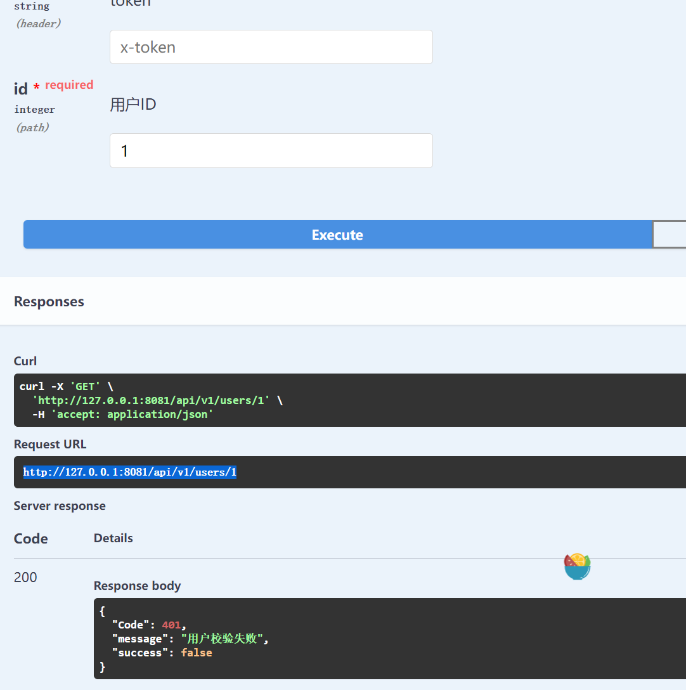
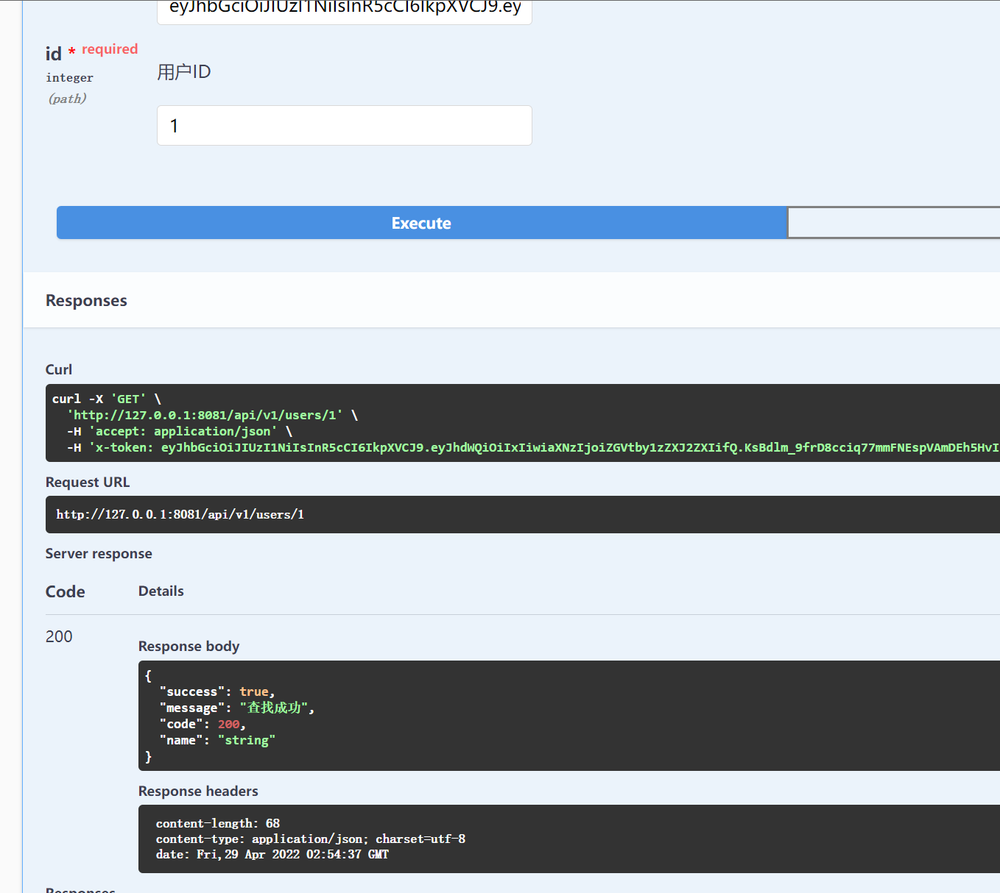

1. 第八章 jwt-go详细教学及使用示例
在前面的各章学习交流后，相信你已经可以写出一个小型后端了，并在开发服务器上运行起来了。但是我们现在仍存在一个问题，就是这些API接口并没有鉴权功能，即所有知道后端地址的人都可以请求该项目的API接口与Swagger文档。甚至可能被网络的端口扫描器所扫描到而滥用。因此我们需要对API接口进行访问控制。
个人所知的API访问控制有两种，OAuth2.0 与JWT .由于这而这完全不同，此处还是使用更轻量化的JWT来实现API的访问控制功能。
1.1. 什么是JWT
JWT：Json Web Token，用来在各方用Json对象安全的传输信息，并且由于此信息经过了数字签名，因此该信息可以被信任。
JWT内部由. 分为三部分：Header Payload Signature 分别是头部，有效信息，签名。
头部介绍令牌类型与使用的签名算法。而Payload则是一个Json对象，表示JWT中实际传输的数据。在签名中则是对前两个部分进行的签名，从而校验消息在整个过程中是否被篡改，对于私钥签名的令牌，还可以验证JWT的发送者是否是真实身份。
典型的认证过程如下，用户登录后，Server像前端发送指定tokens，前端将其存储在Cookie或是localstorage中并在后续每次操作都携带Token，Server端收到请求后便会验证Token，进行鉴权，进行业务逻辑处理。

1.1.1. JWT的安装
go get -u github.com/golang-jwt/jwt@latest
1.2. JWT的使用
使用如下代码生成一个token，其中jwt.StandardClaims为jwt-go中预定义的一些字段，此处只使用两个，并把传来的userid,作为Audience 存储。对上述信息使用SHA256加密，紧接着利用配置文件中配置的server.secret ，来使用token.SignedString 方法生成签名字符串。
// GenerateToken 生成一个token
func GenerateToken(id uint64) (signedToken string) {
claims := jwt.StandardClaims{
Issuer: "demo-server",
Audience: strconv.FormatUint(id, 10),
}
token := jwt.NewWithClaims(jwt.SigningMethodHS256, claims)
secret := global.VP.GetString("server.secret")
signedToken, err := token.SignedString([]byte(secret))
if err != nil {
panic("GenerateToken: sign token error")
}
return
}
当用户登录时，即可通过上述方法，传入指定用户的id后生成对应的token。由于其中使用了私钥secret，可以保证安全性。
当前端将获取到token后在此发来请求，后端便可对此token进行解析验证。具体代码如下，解析token后获得到某用户的uid，从而得到具体的用户正在使用。
// ParseToken 验证token的正确性，正确则返回id
func ParseToken(signedToken string) (id uint64, err error) {
secret := global.VP.GetString("server.secret")
token, err := jwt.Parse(
signedToken,
func(token *jwt.Token) (interface{}, error) {
return []byte(secret), nil
},
)
if err != nil || !token.Valid {
err = errors.New("token isn't valid")
return
}
id, err = strconv.ParseUint(token.Claims.(jwt.MapClaims)["aud"].(string), 10, 64)
if err != nil {
err = errors.New("token isn't valid")
}
return
}
上述代码位于Gin-Demo/utils/auth.go中
1.3. 将JWT应用于中间件中
鉴权若是后端每需要便要调用一次还是比较麻烦的，为此我们将鉴权引入到中间件中，对特定的组路由（GroupRouter）应用此中间件，即可对该组路由对应的API接口进行鉴权。
下图为middleware/auth.go中的代码，通过提取gin上下文中的头部x-token字段,来进行参数验证。若是用户校验失败，则表示前端的token不合法而返回。解析成功后，得到token内部的uid，检测数据库中不存在此用户，同样也是不合法而返回。最终使用c.Set("user", user)，将用户结构体放在上下文中。以便后续直接获取到用户。
func AuthRequired() gin.HandlerFunc {
return func(c *gin.Context) {
token := c.GetHeader("x-token")
id, err := utils.ParseToken(token)
if err != nil {
c.JSON(http.StatusOK, gin.H{"success": false, "message": "用户校验失败"})
c.Abort()
return
}
if user, notFound := service.GetUserByID(id); notFound {
c.JSON(http.StatusOK, gin.H{"success": false, "message": "用户不存在"})
c.Abort()
} else {
`c.Set("user", user)`
}
}
}
在上述将user放入到上下文后，即可通过此方法在各API中来一步获取到当前用户了。
func SolveUser(c *gin.Context) database.User {
userRaw, _ := c.Get("user")
return userRaw.(database.User)
}
user := utils.SolveUser(c)
1.3.1. 简单实践
在router中配置路由，并添加API：GetUser ，测试不加token以及使用正确token的返回结果。通过结果可知测试成功
// 除了登录模块和静态资源之外，都需要身份认证
basicRouter := rawRouter.Group("/")
basicRouter.Use(middleware.AuthRequired())
// 用户模块
userRouter := basicRouter.Group("/users")
{
userRouter.GET("/:id", v1.GetUser)
}
func GetUser(c *gin.Context) {
// 获取请求数据
id, err := strconv.ParseUint(c.Param("id"), 10, 64)
if err != nil {
c.JSON(http.StatusOK, response.GetUserA{Success: false, Message: "请求参数非法", Code: 400})
return
}
// 查询对应ID的用户
if user, notFound := service.GetUserByID(id); notFound {
c.JSON(http.StatusOK, response.GetUserA{Success: false, Message: "找不到对应的用户", Code: 404})
} else {
// 返回响应
c.JSON(http.StatusOK, response.GetUserA{Success: true, Message: "查找成功", Name: user.Name, Code: 200})
}
}

1.4. 参考
- Matrix53 phoenix server
- jwt-go